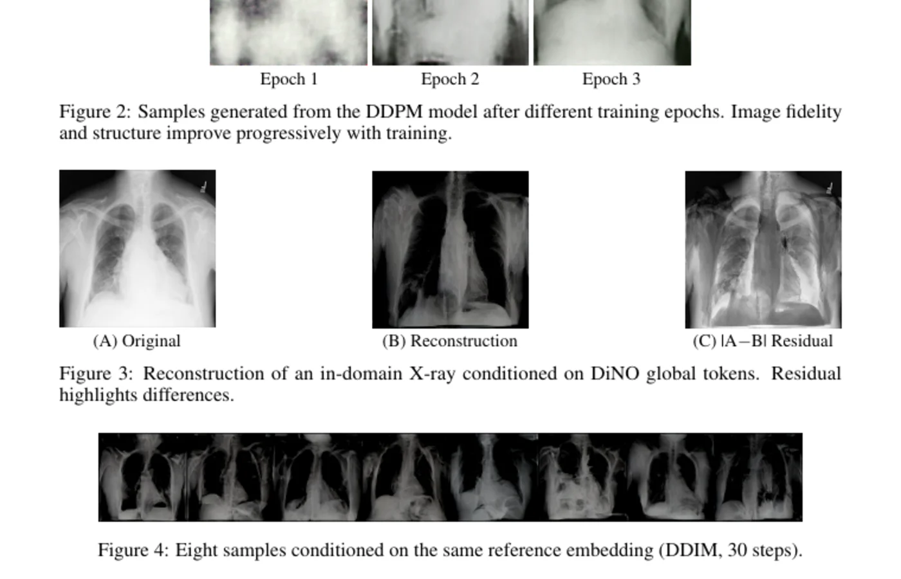

Beginning doctoral research in Intelligent Transportation at HKUST (Guangzhou) as a Postgraduate Studentship recipient.
PhD Researcher · Intelligent Transportation · HKUST (Guangzhou)
I study mobility with data and machine learning.
I’m Frederick Khasanto, a PhD student in Intelligent Transportation at HKUST (Guangzhou), advised by Prof. Benedict Jun MA. My background is in data science and applied AI.
Featured research project
Diffusion models for chest X-ray generation.

A four-person Deep Learning project comparing DDPM and DiNO-conditioned diffusion for synthetic chest X-rays.
DiNO FID2.54
DDPM FID324.44
Training images13,499
Course-project result · team credit preserved in the case study and report.
Research now
A doctoral direction, not a finished claim.
I’m beginning doctoral work in Intelligent Transportation at HKUST (Guangzhou). My current direction is to explore how data analysis and machine learning can support real decisions in transportation systems, while carrying forward experience from optimization, simulation, language AI, and multimodal models.
Recent academic path
Recent research and teaching.
Led tutorials on input/output analysis, simulation optimization, and stochastic gradient descent.
Reviewed transformer-based hate-speech detection research and collected datasets for supervised classification.
Teaching
Teaching is part of how I learn.
I’ve taught programming, machine learning, statistics, and simulation.
- Stochastic Simulation — Tutorials on simulation analysis, optimization, and SGD.
- Probability and Statistics II — Weekly tutorials on statistical inference, ANOVA, and regression.
- Applied Machine Learning — Office hours and problem-solving support for course material.
- Introduction to Programming Methodology — Weekly Python tutorials, live coding, and assignment feedback.